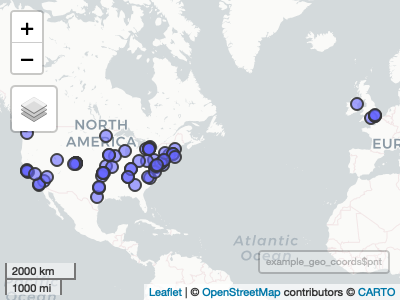

Simple Collection and Powerful Analysis of Twitter Data
The goal of tidytags is to sync together (a) the simplicity of collecting tweets over time with a Twitter Archiving Google Sheet TAGS, (b) the utility of the rtweet package for processing and preparing additional Twitter metadata, and (c) a collection of different analytic functions we have developed during our own social media research.
You can install the released version of tidytags from CRAN with:
#install.packages("tidytags")You can also install the development version of tidytags from GitHub with:
install.packages("devtools")
devtools::install_github("bretsw/tidytags")library(tidytags)If you want to simply view a TAGS archive, you can use read_tags(). Here, we’ve openly shared a TAGS tracker that has been collecting tweets associated with the American Education Researcher Assocation (AERA) conference in 2019. Tweets containing the keyword text “#AERA19” or “#AERA2019” have been collected since February 2019, and this process is still active through today.
This is a basic example which shows you how to read a TAGS sheet and then use {rtweet} (via rtweet::lookup_statuses()) to access additional data. The data for this example were gathered with TAGS, querying the Twitter API to collect tweets containing the #AERA19 or #AERA2019 hashtags throughout most of the year 2019 (beginning February 22, 2019). The tidytags::read_tags() and tidytags::pull_tweet_data() functions work together to retrieve data from a TAGS source.
Note that your dataset will often contain fewer rows after running tidytags::pull_tweet_data(). This is because rtweet::lookup_statuses() is searching for tweet IDs that are currently available. Any tweets that have been deleted or made “protected” (i.e., private) since TAGS first collected them are dropped from the dataset. Rather than view this as a limitation, we see this as an asset to help ensure our data better reflects the intentions of the accounts whose tweets we have collected (see Fiesler & Proferes, 2018).
example_snippet <- tail(example_df_all, 100)
example_after_rtweet0 <- pull_tweet_data(example_snippet$id_str)
example_after_rtweet <- pull_tweet_data(get_char_tweet_ids(example_snippet))
dim(example_after_rtweet0); dim(example_after_rtweet)
#> [1] 54 90
#> [1] 95 90Here is the result, viewed with the glimpse() function from dplyr:
dplyr::glimpse(example_after_rtweet)
#> Observations: 95
#> Variables: 90
#> $ user_id <chr> "2994964450", "33107559", "33107559", "331075…
#> $ status_id <chr> "1099077877960708096", "1099435242501287937",…
#> $ created_at <dttm> 2019-02-22 22:46:00, 2019-02-23 22:26:02, 20…
#> $ screen_name <chr> "stephlezotte", "lizjmeyer", "lizjmeyer", "li…
#> $ text <chr> "If you are interested in understanding and e…
#> $ source <chr> "Twitter for iPhone", "Twitter for iPhone", "…
#> $ display_text_width <dbl> 150, 101, 156, 111, 163, 271, 144, 140, 207, …
#> $ reply_to_status_id <chr> NA, "1099433973195800576", "10994339731958005…
#> $ reply_to_user_id <chr> NA, "33107559", "33107559", NA, "33107559", "…
#> $ reply_to_screen_name <chr> NA, "lizjmeyer", "lizjmeyer", NA, "lizjmeyer"…
#> $ is_quote <lgl> FALSE, FALSE, FALSE, TRUE, FALSE, FALSE, FALS…
#> $ is_retweet <lgl> FALSE, FALSE, FALSE, FALSE, FALSE, FALSE, TRU…
#> $ favorite_count <int> 3, 5, 4, 1, 4, 6, 0, 0, 13, 0, 0, 0, 0, 0, 0,…
#> $ retweet_count <int> 1, 1, 1, 4, 1, 1, 33, 7, 1, 33, 33, 1, 1, 1, …
#> $ quote_count <int> NA, NA, NA, NA, NA, NA, NA, NA, NA, NA, NA, N…
#> $ reply_count <int> NA, NA, NA, NA, NA, NA, NA, NA, NA, NA, NA, N…
#> $ hashtags <list> ["AERA19", <"titleix", "aera19">, <"metoo", …
#> $ symbols <list> [NA, NA, NA, NA, NA, NA, NA, NA, NA, NA, NA,…
#> $ urls_url <list> [NA, NA, NA, "twitter.com/AERADivisionK/…", …
#> $ urls_t.co <list> [NA, NA, NA, "https://t.co/O4kF3miiHp", NA, …
#> $ urls_expanded_url <list> [NA, NA, NA, "https://twitter.com/AERADivisi…
#> $ media_url <list> ["http://pbs.twimg.com/media/D0C1gKVX0AMgLxH…
#> $ media_t.co <list> ["https://t.co/fvpuZPmBqC", "https://t.co/RH…
#> $ media_expanded_url <list> ["https://twitter.com/stephlezotte/status/10…
#> $ media_type <list> ["photo", "photo", "photo", NA, "photo", NA,…
#> $ ext_media_url <list> ["http://pbs.twimg.com/media/D0C1gKVX0AMgLxH…
#> $ ext_media_t.co <list> ["https://t.co/fvpuZPmBqC", "https://t.co/RH…
#> $ ext_media_expanded_url <list> ["https://twitter.com/stephlezotte/status/10…
#> $ ext_media_type <chr> NA, NA, NA, NA, NA, NA, NA, NA, NA, NA, NA, N…
#> $ mentions_user_id <list> [NA, <"831239402932289538", "3158586588", "1…
#> $ mentions_screen_name <list> [NA, <"DrKatieLewis", "AERADivisionK", "aera…
#> $ lang <chr> "en", "en", "en", "en", "en", "en", "en", "en…
#> $ quoted_status_id <chr> NA, NA, NA, "1099039335104442370", NA, NA, NA…
#> $ quoted_text <chr> NA, NA, NA, "#AERADivK's Equity & Inclusi…
#> $ quoted_created_at <dttm> NA, NA, NA, 2019-02-22 20:12:51, NA, NA, NA,…
#> $ quoted_source <chr> NA, NA, NA, "Twitter Web Client", NA, NA, NA,…
#> $ quoted_favorite_count <int> NA, NA, NA, 38, NA, NA, NA, NA, NA, NA, NA, N…
#> $ quoted_retweet_count <int> NA, NA, NA, 33, NA, NA, NA, NA, NA, NA, NA, N…
#> $ quoted_user_id <chr> NA, NA, NA, "3158586588", NA, NA, NA, NA, NA,…
#> $ quoted_screen_name <chr> NA, NA, NA, "AERADivisionK", NA, NA, NA, NA, …
#> $ quoted_name <chr> NA, NA, NA, "DivisionK", NA, NA, NA, NA, NA, …
#> $ quoted_followers_count <int> NA, NA, NA, 957, NA, NA, NA, NA, NA, NA, NA, …
#> $ quoted_friends_count <int> NA, NA, NA, 322, NA, NA, NA, NA, NA, NA, NA, …
#> $ quoted_statuses_count <int> NA, NA, NA, 397, NA, NA, NA, NA, NA, NA, NA, …
#> $ quoted_location <chr> NA, NA, NA, "", NA, NA, NA, NA, NA, NA, NA, N…
#> $ quoted_description <chr> NA, NA, NA, "The Official AERA Division K Twi…
#> $ quoted_verified <lgl> NA, NA, NA, FALSE, NA, NA, NA, NA, NA, NA, NA…
#> $ retweet_status_id <chr> NA, NA, NA, NA, NA, NA, "1099039335104442370"…
#> $ retweet_text <chr> NA, NA, NA, NA, NA, NA, "#AERADivK's Equity &…
#> $ retweet_created_at <dttm> NA, NA, NA, NA, NA, NA, 2019-02-22 20:12:51,…
#> $ retweet_source <chr> NA, NA, NA, NA, NA, NA, "Twitter Web Client",…
#> $ retweet_favorite_count <int> NA, NA, NA, NA, NA, NA, 38, 5, NA, 38, 38, 4,…
#> $ retweet_retweet_count <int> NA, NA, NA, NA, NA, NA, 33, 7, NA, 33, 33, 1,…
#> $ retweet_user_id <chr> NA, NA, NA, NA, NA, NA, "3158586588", "143203…
#> $ retweet_screen_name <chr> NA, NA, NA, NA, NA, NA, "AERADivisionK", "AER…
#> $ retweet_name <chr> NA, NA, NA, NA, NA, NA, "DivisionK", "Div J G…
#> $ retweet_followers_count <int> NA, NA, NA, NA, NA, NA, 957, 2367, NA, 957, 9…
#> $ retweet_friends_count <int> NA, NA, NA, NA, NA, NA, 322, 2325, NA, 322, 3…
#> $ retweet_statuses_count <int> NA, NA, NA, NA, NA, NA, 397, 4603, NA, 397, 3…
#> $ retweet_location <chr> NA, NA, NA, NA, NA, NA, "", "", NA, "", "", "…
#> $ retweet_description <chr> NA, NA, NA, NA, NA, NA, "The Official AERA Di…
#> $ retweet_verified <lgl> NA, NA, NA, NA, NA, NA, FALSE, FALSE, NA, FAL…
#> $ place_url <chr> NA, NA, NA, NA, NA, NA, NA, NA, NA, NA, NA, N…
#> $ place_name <chr> NA, NA, NA, NA, NA, NA, NA, NA, NA, NA, NA, N…
#> $ place_full_name <chr> NA, NA, NA, NA, NA, NA, NA, NA, NA, NA, NA, N…
#> $ place_type <chr> NA, NA, NA, NA, NA, NA, NA, NA, NA, NA, NA, N…
#> $ country <chr> NA, NA, NA, NA, NA, NA, NA, NA, NA, NA, NA, N…
#> $ country_code <chr> NA, NA, NA, NA, NA, NA, NA, NA, NA, NA, NA, N…
#> $ geo_coords <list> [<NA, NA>, <NA, NA>, <NA, NA>, <NA, NA>, <NA…
#> $ coords_coords <list> [<NA, NA>, <NA, NA>, <NA, NA>, <NA, NA>, <NA…
#> $ bbox_coords <list> [<NA, NA, NA, NA, NA, NA, NA, NA>, <NA, NA, …
#> $ status_url <chr> "https://twitter.com/stephlezotte/status/1099…
#> $ name <chr> "Stephanie Lezotte", "Elizabeth J. Meyer", "E…
#> $ location <chr> "South Jersey", "Boulder, CO", "Boulder, CO",…
#> $ description <chr> "PhD candidate (higher ed org theory), Resear…
#> $ url <chr> NA, "https://t.co/XlATn4P6VT", "https://t.co/…
#> $ protected <lgl> FALSE, FALSE, FALSE, FALSE, FALSE, FALSE, FAL…
#> $ followers_count <int> 102, 2380, 2380, 2380, 2380, 2380, 548, 4180,…
#> $ friends_count <int> 321, 1592, 1592, 1592, 1592, 1592, 556, 2950,…
#> $ listed_count <int> 2, 154, 154, 154, 154, 154, 4, 69, 1, 11, 53,…
#> $ statuses_count <int> 211, 14369, 14369, 14369, 14369, 14369, 11337…
#> $ favourites_count <int> 298, 6335, 6335, 6335, 6335, 6335, 28508, 250…
#> $ account_created_at <dttm> 2015-01-23 22:29:03, 2009-04-19 02:58:52, 20…
#> $ verified <lgl> FALSE, FALSE, FALSE, FALSE, FALSE, FALSE, FAL…
#> $ profile_url <chr> NA, "https://t.co/XlATn4P6VT", "https://t.co/…
#> $ profile_expanded_url <chr> NA, "http://elizabethjmeyer.com", "http://eli…
#> $ account_lang <lgl> NA, NA, NA, NA, NA, NA, NA, NA, NA, NA, NA, N…
#> $ profile_banner_url <chr> "https://pbs.twimg.com/profile_banners/299496…
#> $ profile_background_url <chr> "http://abs.twimg.com/images/themes/theme1/bg…
#> $ profile_image_url <chr> "http://pbs.twimg.com/profile_images/96213769…At this point, the purpose of the tidytags R package should be restated. TAGS Tweet trackers are easily set up and maintained, and does an excellent job passively collecting tweets over time. For instance, our example TAGS we demo here has collected thousands of tweets containing the keyword text “#AERA19 OR #AERA2019”. In contrast, running this query now using rtweet::search_tweets() is limited by Twitter’s API, and this search can only go back in time 6-9 days, and is limited to returning at most 18,000 tweets per query. So, if you are interested in tweets about the 2019 AERA conference in Toronto, today you could get almost no meaningful data using rtweet alone.
rtweet_today <- rtweet::search_tweets("#AERA19 OR #AERA2019", n=18000)
paste("Number of tweets returned by an rtweet search today:", nrow(rtweet_today))
#> [1] "Number of tweets returned by an rtweet search today: 2"While TAGS is great at easily collecting tweets over time (breadth), it lacks depth in terms of metadata is returned related to the gathered tweets. Specifically, TAGS returns information on at most 18 variables; in contrast, rtweet returns information on up to 90 variables. Thus our package tidytags is needed to combine the breadth of TAGS with the depth of rtweet. This is succinctly demonstrated by comparing the dimensions of the full TAGS dataset example_df_all with the snippet expanded with rtweet, example_full.
The Twitter API only allows the looking up of 90,000 tweet IDs at a time, a rate limit which resets after 15 minutes. Hence rtweet::lookup_statuses() will only return results for the first 90,000 tweet IDs in your dataset. The function tidytags::lookup_many_tweets() will automotically break your dataset into batches of 90,000 tweets, looking up one batch per hour until finished. Note that lookup_many_tweets() also works for datasets with fewer than 90,000 tweets as well.
Because lookup_many_tweets() involves waiting for 15 minutes between batches, we do not include an example here. However, this function can be used the same as pull_tweet_data().
example_processed <- process_tweets(example_after_rtweet)
dim(example_processed)
#> [1] 95 100longurl::expand_urls("http://bit.ly/36KWct1", seconds=10)
#> # A tibble: 1 x 3
#> orig_url expanded_url status_code
#> <chr> <chr> <int>
#> 1 http://bit.ly/36KWct1 https://www.aera.net/About-AERA 200
get_url_domain("http://bit.ly/36KWct1")
#> [1] "aera.net"example_domains <- get_url_domain(example_after_rtweet$urls_url)
example_domains[which(!is.na(example_domains))]
#> [1] "twitter.com" "twitter.com"
#> [3] "aera.net" "docs.google.com"
#> [5] "events.uw.edu" "docs.google.com"
#> [7] "docs.google.com" "twitter.com"
#> [9] "motsig.org" "convention2.allacademic.com"
#> [11] "insidehighered.com" "docs.google.com"
#> [13] "twitter.com" "twitter.com"
#> [15] "convention2.allacademic.com" "docs.google.com"
#> [17] "twitter.com" "aera19.net"
#> [19] "convention2.allacademic.com"First, tidytags::geocode_tags() pulls from the Google Geocoding API, which requires a Google Geocoding API Key. You can easily secure a key through Google Cloud Platform; read more here. Next, we recommend saving your Google Geocoding API Key in the .Renviron file as ‘Google_API_key’. You can quickly access this file using the R code usethis::edit_r_environ(scope='user').
Note that tidytags::geocode_tags() should be used after additional metadata has been retrieved with tidytags::pull_tweet_data().
usethis::edit_r_environ(scope='user')Once you’ve saved your this file, quit your R session and restart. The function tidytags::geocode_tags() will work for you from now on.
We’ve paired tidytags::geocode_tags() with the mapview package for quick, inteactive viewing of the geocoded data. Read more about mapview here.
example_geo_coords <- geocode_tags(example_after_rtweet)
#> South Jersey............................OK
#> Boulder, CO.............................OK
#> Boulder, CO.............................OK
#> Boulder, CO.............................OK
#> Boulder, CO.............................OK
#> Boulder, CO.............................OK
#> So Cal..................................OK
#> NA......................................
#> Greater Toronto Area, Ontario,..........OK
#> NA......................................
#> New York, NY............................OK
#> renold@cf.ac.uk.........................ZERO_RESULTS
#> renold@cf.ac.uk.........................ZERO_RESULTS
#> renold@cf.ac.uk.........................ZERO_RESULTS
#> Richmond Hill, Ontario..................OK
#> Austin, TX..............................OK
#> disrespected piscataway lands...........OK
#> Philly jawn in Bmore, again.............OK
#> Oakland, CA.............................OK
#> Milwaukee, WI...........................OK
#> Global..................................OK
#> George Mason, VA........................OK
#> George Mason, VA........................OK
#> Portland, ME............................OK
#> Boulder, CO.............................OK
#> From Stamford CT to the DMV.............ZERO_RESULTS
#> Louisville, KY, USA.....................OK
#> Eastleigh, England......................OK
#> Washington, DC..........................OK
#> State College, PA.......................OK
#> Denver, CO..............................OK
#> International...........................OK
#> NA......................................
#> New York City...........................OK
#> LONDON UK...............................OK
#> Iowa City...............................OK
#> NA......................................
#> NA......................................
#> Seattle, WA.............................OK
#> ENFIELD.................................OK
#> Columbia, MO............................OK
#> Toronto, Ontario, Canada................OK
#> San Jose, CA............................OK
#> Osage & Haudenosauneega Lands..........OK
#> Toronto, Ontario........................OK
#> Grand Prairie, TX.......................OK
#> NA......................................
#> NA......................................
#> Philadelphia, PA........................OK
#> NA......................................
#> Long Beach, California..................OK
#> Waterloo, Ontario, Canada...............OK
#> North Carolina, USA.....................OK
#> Pico Rivera, CA.........................OK
#> 🕉 💪🏽🧠...................................ZERO_RESULTS
#> United States...........................OK
#> Salt Lake City, UT......................OK
#> Pittsburgh, PA..........................OK
#> MN ➡ DC.................................OK
#> MI......................................OK
#> NA......................................
#> Berkeley, CA............................OK
#> Atlanta, GA.............................OK
#> North Vancouver.........................OK
#> NA......................................
#> University of Toronto...................OK
#> Greensboro, North Carolina..............OK
#> NA......................................
#> NA......................................
#> Brazil/Canada...........................OK
#> Brazil/Canada...........................OK
#> Savannah, TX............................OK
#> Richmond, VA............................OK
#> Las Vegas, NV...........................OK
#> London, England.........................OK
#> Louth, Ireland..........................OK
#> Colorado, USA...........................OK
#> Albany, NY..............................OK
#> Nashville, TN...........................OK
#> korean “america” and london.............OK
#> Montréal | Toronto......................OK
#> College Park, MD........................OK
#> Ohio....................................OK
#> Louisville, KY..........................OK
#> Ames, IA................................OK
#> Ames, IA................................OK
#> Nashville, TN...........................OK
#> San Francisco, CA.......................OK
#> Boston MA...............................OK
#> Boston MA...............................OK
#> Wampanoag & Massachussett land..........OK
#> California..............................OK
#> United States...........................OK
#> New York, NY............................OK
#> Baltimore, MD...........................OK
example_map <- mapview::mapview(example_geo_coords$pnt)
#> Warning in validateCoords(lng, lat, funcName): Data contains 17 rows with either
#> missing or invalid lat/lon values and will be ignored
mapview::mapshot(example_map, file="example-map.png")
example_map
sample1000 <- pull_tweet_data(get_char_tweet_ids(dplyr::sample_n(example_df_all, 1000)))
sample_with_upstream <- get_upstream_replies(sample1000)
#> [1] "Iteration: 1"
#> [1] "New tweets added: 36; Unknown replies:22; Searchable replies: 22"
#> [1] "Iteration: 2"
#> [1] "New tweets added: 22; Unknown replies:15; Searchable replies: 15"
#> [1] "Iteration: 3"
#> [1] "New tweets added: 15; Unknown replies:14; Searchable replies: 14"
#> [1] "Iteration: 4"
#> [1] "New tweets added: 14; Unknown replies:13; Searchable replies: 13"
#> [1] "Iteration: 5"
#> [1] "New tweets added: 13; Unknown replies:13; Searchable replies: 13"
#> [1] "Iteration: 6"
#> [1] "New tweets added: 13; Unknown replies:12; Searchable replies: 12"
#> [1] "Iteration: 7"
#> [1] "New tweets added: 12; Unknown replies:12; Searchable replies: 12"
#> [1] "Iteration: 8"
#> [1] "New tweets added: 12; Unknown replies:12; Searchable replies: 12"
#> [1] "Iteration: 9"
#> [1] "New tweets added: 12; Unknown replies:11; Searchable replies: 11"
#> [1] "Iteration: 10"
#> [1] "New tweets added: 11; Unknown replies:10; Searchable replies: 10"
#> [1] "Iteration: 11"
#> [1] "New tweets added: 10; Unknown replies:9; Searchable replies: 9"
#> [1] "Iteration: 12"
#> [1] "New tweets added: 9; Unknown replies:8; Searchable replies: 8"
#> [1] "Iteration: 13"
#> [1] "New tweets added: 8; Unknown replies:6; Searchable replies: 6"
#> [1] "Iteration: 14"
#> [1] "New tweets added: 6; Unknown replies:4; Searchable replies: 4"
#> [1] "Iteration: 15"
#> [1] "New tweets added: 4; Unknown replies:4; Searchable replies: 4"
#> [1] "Iteration: 16"
#> [1] "New tweets added: 4; Unknown replies:3; Searchable replies: 3"
#> [1] "Iteration: 17"
#> [1] "New tweets added: 3; Unknown replies:2; Searchable replies: 2"
#> [1] "Iteration: 18"
#> [1] "New tweets added: 2; Unknown replies:2; Searchable replies: 2"
#> [1] "Iteration: 19"
#> [1] "New tweets added: 2; Unknown replies:2; Searchable replies: 2"
#> [1] "Iteration: 20"
#> [1] "New tweets added: 2; Unknown replies:1; Searchable replies: 1"
#> [1] "Iteration: 21"
#> [1] "New tweets added: 1; Unknown replies:1; Searchable replies: 1"
#> [1] "Iteration: 22"
#> [1] "New tweets added: 1; Unknown replies:1; Searchable replies: 1"
#> [1] "Iteration: 23"
#> [1] "New tweets added: 1; Unknown replies:0; Searchable replies: 0"
dim(sample1000); dim(sample_with_upstream)
#> [1] 929 90
#> [1] 1142 100nrow(get_replies(example_after_rtweet)); nrow(get_retweets(example_after_rtweet)); nrow(get_quotes(example_after_rtweet)); nrow(get_mentions(example_after_rtweet))
#> [1] 5
#> [1] 72
#> [1] 6
#> [1] 131Create an edgelist from the TAGS data using the tidytags::create_edgelist() function:
example_edgelist <- create_edgelist(example_after_rtweet)
head(example_edgelist, 20)
#> # A tibble: 20 x 3
#> sender receiver edge_type
#> <chr> <chr> <chr>
#> 1 lizjmeyer lizjmeyer reply
#> 2 lizjmeyer lizjmeyer reply
#> 3 lizjmeyer lizjmeyer reply
#> 4 lizjmeyer DrKatieLewis reply
#> 5 AERADivisionK AERADivisionK reply
#> 6 ZingerLearns AERADivisionK retweet
#> 7 ashegrads AERADivJGradNet retweet
#> 8 profm_de_r AERADivisionK retweet
#> 9 DrKYSR AERADivisionK retweet
#> 10 EmmaRenold lizjmeyer retweet
#> 11 EmmaRenold lizjmeyer retweet
#> 12 EmmaRenold lizjmeyer retweet
#> 13 pereira_rasoHTS DrJaimeMalic retweet
#> 14 SnackinMadkins AERADivisionK retweet
#> 15 blkwknd afroacademic retweet
#> 16 DrCamikaRoyal AERADivisionK retweet
#> 17 danacotto AKoenka retweet
#> 18 ebovee09 AERA_MotSIG retweet
#> 19 DoItGurl AERADivisionK retweet
#> 20 CarrieNKlein AERADivJGradNet retweet
dplyr::count(example_edgelist, edge_type)
#> # A tibble: 4 x 2
#> edge_type n
#> <chr> <int>
#> 1 mention 131
#> 2 quote-tweet 6
#> 3 reply 5
#> 4 retweet 72tidytags also has functionality to add user-level data to an edgelist through the function tidytags::add_users_data().
example_users_data <- rtweet::users_data(example_after_rtweet)
example_senders_receivers_data <- add_users_data(example_edgelist, example_users_data)
dplyr::glimpse(example_senders_receivers_data)
#> Observations: 214
#> Variables: 41
#> $ sender <chr> "lizjmeyer", "lizjmeyer", "lizjmeyer"…
#> $ receiver <chr> "lizjmeyer", "lizjmeyer", "lizjmeyer"…
#> $ edge_type <chr> "reply", "reply", "reply", "reply", "…
#> $ user_id_sender <chr> "33107559", "33107559", "33107559", "…
#> $ name_sender <chr> "Elizabeth J. Meyer", "Elizabeth J. M…
#> $ location_sender <chr> "Boulder, CO", "Boulder, CO", "Boulde…
#> $ description_sender <chr> "Assoc. Dean of Students @cueducation…
#> $ url_sender <chr> "https://t.co/XlATn4P6VT", "https://t…
#> $ protected_sender <lgl> FALSE, FALSE, FALSE, FALSE, FALSE, FA…
#> $ followers_count_sender <int> 2380, 2380, 2380, 2380, 957, 548, 418…
#> $ friends_count_sender <int> 1592, 1592, 1592, 1592, 322, 556, 295…
#> $ listed_count_sender <int> 154, 154, 154, 154, 10, 4, 69, 11, 53…
#> $ statuses_count_sender <int> 14369, 14369, 14369, 14369, 397, 1133…
#> $ favourites_count_sender <int> 6335, 6335, 6335, 6335, 226, 28508, 2…
#> $ account_created_at_sender <dttm> 2009-04-19 02:58:52, 2009-04-19 02:5…
#> $ verified_sender <lgl> FALSE, FALSE, FALSE, FALSE, FALSE, FA…
#> $ profile_url_sender <chr> "https://t.co/XlATn4P6VT", "https://t…
#> $ profile_expanded_url_sender <chr> "http://elizabethjmeyer.com", "http:/…
#> $ account_lang_sender <lgl> NA, NA, NA, NA, NA, NA, NA, NA, NA, N…
#> $ profile_banner_url_sender <chr> "https://pbs.twimg.com/profile_banner…
#> $ profile_background_url_sender <chr> "http://abs.twimg.com/images/themes/t…
#> $ profile_image_url_sender <chr> "http://pbs.twimg.com/profile_images/…
#> $ user_id_receiver <chr> "33107559", "33107559", "33107559", "…
#> $ name_receiver <chr> "Elizabeth J. Meyer", "Elizabeth J. M…
#> $ location_receiver <chr> "Boulder, CO", "Boulder, CO", "Boulde…
#> $ description_receiver <chr> "Assoc. Dean of Students @cueducation…
#> $ url_receiver <chr> "https://t.co/XlATn4P6VT", "https://t…
#> $ protected_receiver <lgl> FALSE, FALSE, FALSE, FALSE, FALSE, FA…
#> $ followers_count_receiver <int> 2380, 2380, 2380, 183, 957, 957, 2367…
#> $ friends_count_receiver <int> 1592, 1592, 1592, 385, 322, 322, 2325…
#> $ listed_count_receiver <int> 154, 154, 154, 5, 10, 10, 27, 10, 10,…
#> $ statuses_count_receiver <int> 14369, 14369, 14369, 750, 397, 397, 4…
#> $ favourites_count_receiver <int> 6335, 6335, 6335, 5123, 226, 226, 224…
#> $ account_created_at_receiver <dttm> 2009-04-19 02:58:52, 2009-04-19 02:5…
#> $ verified_receiver <lgl> FALSE, FALSE, FALSE, FALSE, FALSE, FA…
#> $ profile_url_receiver <chr> "https://t.co/XlATn4P6VT", "https://t…
#> $ profile_expanded_url_receiver <chr> "http://elizabethjmeyer.com", "http:/…
#> $ account_lang_receiver <lgl> NA, NA, NA, NA, NA, NA, NA, NA, NA, N…
#> $ profile_banner_url_receiver <chr> "https://pbs.twimg.com/profile_banner…
#> $ profile_background_url_receiver <chr> "http://abs.twimg.com/images/themes/t…
#> $ profile_image_url_receiver <chr> "http://pbs.twimg.com/profile_images/…The tidytags package is licensed under a GNU General Public License v3.0, or GPL-3. For background on why we chose this license, read Hadley’s take at http://r-pkgs.had.co.nz/description.html#license.
devtools::session_info()
#> ─ Session info ───────────────────────────────────────────────────────────────
#> setting value
#> version R version 3.6.2 (2019-12-12)
#> os macOS Mojave 10.14.6
#> system x86_64, darwin15.6.0
#> ui X11
#> language (EN)
#> collate en_US.UTF-8
#> ctype en_US.UTF-8
#> tz America/New_York
#> date 2020-02-21
#>
#> ─ Packages ───────────────────────────────────────────────────────────────────
#> package * version date lib source
#> askpass 1.1 2019-01-13 [1] CRAN (R 3.6.0)
#> assertthat 0.2.1 2019-03-21 [1] CRAN (R 3.6.0)
#> backports 1.1.5 2019-10-02 [1] CRAN (R 3.6.0)
#> base64enc 0.1-3 2015-07-28 [1] CRAN (R 3.6.0)
#> bitops 1.0-6 2013-08-17 [1] CRAN (R 3.6.0)
#> callr 3.4.2 2020-02-12 [1] CRAN (R 3.6.0)
#> cellranger 1.1.0 2016-07-27 [1] CRAN (R 3.6.0)
#> class 7.3-15 2019-01-01 [1] CRAN (R 3.6.2)
#> classInt 0.4-2 2019-10-17 [1] CRAN (R 3.6.0)
#> cli 2.0.1 2020-01-08 [1] CRAN (R 3.6.0)
#> codetools 0.2-16 2018-12-24 [1] CRAN (R 3.6.2)
#> colorspace 1.4-1 2019-03-18 [1] CRAN (R 3.6.0)
#> crayon 1.3.4 2017-09-16 [1] CRAN (R 3.6.0)
#> crosstalk 1.0.0 2016-12-21 [1] CRAN (R 3.6.0)
#> curl 4.3 2019-12-02 [1] CRAN (R 3.6.0)
#> DBI 1.1.0 2019-12-15 [1] CRAN (R 3.6.0)
#> desc 1.2.0 2018-05-01 [1] CRAN (R 3.6.0)
#> devtools 2.2.2 2020-02-17 [1] CRAN (R 3.6.0)
#> digest 0.6.24 2020-02-12 [1] CRAN (R 3.6.0)
#> dplyr 0.8.4 2020-01-31 [1] CRAN (R 3.6.0)
#> e1071 1.7-3 2019-11-26 [1] CRAN (R 3.6.0)
#> ellipsis 0.3.0 2019-09-20 [1] CRAN (R 3.6.0)
#> evaluate 0.14 2019-05-28 [1] CRAN (R 3.6.0)
#> fansi 0.4.1 2020-01-08 [1] CRAN (R 3.6.0)
#> fastmap 1.0.1 2019-10-08 [1] CRAN (R 3.6.0)
#> fs 1.3.1 2019-05-06 [1] CRAN (R 3.6.0)
#> glue 1.3.1 2019-03-12 [1] CRAN (R 3.6.0)
#> googlesheets 0.3.0 2018-06-29 [1] CRAN (R 3.6.0)
#> hms 0.5.3 2020-01-08 [1] CRAN (R 3.6.0)
#> htmltools 0.4.0 2019-10-04 [1] CRAN (R 3.6.0)
#> htmlwidgets 1.5.1 2019-10-08 [1] CRAN (R 3.6.0)
#> httpuv 1.5.2 2019-09-11 [1] CRAN (R 3.6.0)
#> httr 1.4.1 2019-08-05 [1] CRAN (R 3.6.0)
#> jsonlite 1.6.1 2020-02-02 [1] CRAN (R 3.6.0)
#> KernSmooth 2.23-16 2019-10-15 [1] CRAN (R 3.6.2)
#> knitr 1.28 2020-02-06 [1] CRAN (R 3.6.0)
#> later 1.0.0 2019-10-04 [1] CRAN (R 3.6.0)
#> lattice 0.20-38 2018-11-04 [1] CRAN (R 3.6.0)
#> leafem 0.0.1 2019-04-30 [1] CRAN (R 3.6.0)
#> leaflet 2.0.3 2019-11-16 [1] CRAN (R 3.6.0)
#> leaflet.providers 1.9.0 2019-11-09 [1] CRAN (R 3.6.0)
#> lifecycle 0.1.0 2019-08-01 [1] CRAN (R 3.6.0)
#> longurl 0.3.0 2016-12-18 [1] CRAN (R 3.6.0)
#> magrittr 1.5 2014-11-22 [1] CRAN (R 3.6.0)
#> mapsapi 0.4.2 2019-09-07 [1] CRAN (R 3.6.0)
#> mapview 2.7.0 2019-05-13 [1] CRAN (R 3.6.0)
#> memoise 1.1.0 2017-04-21 [1] CRAN (R 3.6.0)
#> mime 0.9 2020-02-04 [1] CRAN (R 3.6.2)
#> munsell 0.5.0 2018-06-12 [1] CRAN (R 3.6.0)
#> openssl 1.4.1 2019-07-18 [1] CRAN (R 3.6.0)
#> pillar 1.4.3 2019-12-20 [1] CRAN (R 3.6.0)
#> pkgbuild 1.0.6 2019-10-09 [1] CRAN (R 3.6.0)
#> pkgconfig 2.0.3 2019-09-22 [1] CRAN (R 3.6.0)
#> pkgload 1.0.2 2018-10-29 [1] CRAN (R 3.6.0)
#> png 0.1-7 2013-12-03 [1] CRAN (R 3.6.0)
#> prettyunits 1.1.1 2020-01-24 [1] CRAN (R 3.6.0)
#> processx 3.4.2 2020-02-09 [1] CRAN (R 3.6.0)
#> progress 1.2.2 2019-05-16 [1] CRAN (R 3.6.0)
#> promises 1.1.0 2019-10-04 [1] CRAN (R 3.6.0)
#> ps 1.3.2 2020-02-13 [1] CRAN (R 3.6.0)
#> purrr 0.3.3 2019-10-18 [1] CRAN (R 3.6.0)
#> R6 2.4.1 2019-11-12 [1] CRAN (R 3.6.0)
#> raster 3.0-12 2020-01-30 [1] CRAN (R 3.6.0)
#> Rcpp 1.0.3 2019-11-08 [1] CRAN (R 3.6.0)
#> readr 1.3.1 2018-12-21 [1] CRAN (R 3.6.0)
#> remotes 2.1.1 2020-02-15 [1] CRAN (R 3.6.0)
#> rlang 0.4.4 2020-01-28 [1] CRAN (R 3.6.0)
#> rmarkdown 2.1 2020-01-20 [1] CRAN (R 3.6.0)
#> rprojroot 1.3-2 2018-01-03 [1] CRAN (R 3.6.0)
#> rtweet 0.7.0 2020-01-08 [1] CRAN (R 3.6.0)
#> satellite 1.0.2 2019-12-09 [1] CRAN (R 3.6.0)
#> scales 1.1.0 2019-11-18 [1] CRAN (R 3.6.0)
#> sessioninfo 1.1.1 2018-11-05 [1] CRAN (R 3.6.0)
#> sf 0.8-1 2020-01-28 [1] CRAN (R 3.6.0)
#> shiny 1.4.0 2019-10-10 [1] CRAN (R 3.6.0)
#> sp 1.3-2 2019-11-07 [1] CRAN (R 3.6.0)
#> stringi 1.4.6 2020-02-17 [1] CRAN (R 3.6.0)
#> stringr 1.4.0 2019-02-10 [1] CRAN (R 3.6.0)
#> testthat 2.3.1 2019-12-01 [1] CRAN (R 3.6.0)
#> tibble 2.1.3 2019-06-06 [1] CRAN (R 3.6.0)
#> tidyr 1.0.2 2020-01-24 [1] CRAN (R 3.6.0)
#> tidyselect 1.0.0 2020-01-27 [1] CRAN (R 3.6.0)
#> tidytags * 0.1.0 2020-02-11 [1] Github (bretsw/tidytags@12e50ab)
#> triebeard 0.3.0 2016-08-04 [1] CRAN (R 3.6.0)
#> units 0.6-5 2019-10-08 [1] CRAN (R 3.6.0)
#> urltools 1.7.3 2019-04-14 [1] CRAN (R 3.6.0)
#> usethis 1.5.1 2019-07-04 [1] CRAN (R 3.6.0)
#> utf8 1.1.4 2018-05-24 [1] CRAN (R 3.6.0)
#> vctrs 0.2.2 2020-01-24 [1] CRAN (R 3.6.0)
#> viridisLite 0.3.0 2018-02-01 [1] CRAN (R 3.6.0)
#> webshot 0.5.2 2019-11-22 [1] CRAN (R 3.6.0)
#> withr 2.1.2 2018-03-15 [1] CRAN (R 3.6.0)
#> xfun 0.12 2020-01-13 [1] CRAN (R 3.6.0)
#> xml2 1.2.2 2019-08-09 [1] CRAN (R 3.6.0)
#> xtable 1.8-4 2019-04-21 [1] CRAN (R 3.6.0)
#> yaml 2.2.1 2020-02-01 [1] CRAN (R 3.6.0)
#>
#> [1] /Library/Frameworks/R.framework/Versions/3.6/Resources/library